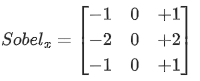
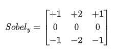

车道线检测
车道线检测是图像识别的常见应用，希望同学们通过完成这个作业获得车道线检测的经验。
Lane line detection is a common application of image recognition. I hope that students can gain experience in lane line detection by completing this assignment.
参考资料
Opencv-Python处理车道线检测_live4046的博客-CSDN博客
需要完成的任务
希望同学们可以完成车道线的识别，供同学们使用的素材可以在后面的链接中下载。
下面给出一张行车图像，希望大家能够使用图像处理的方式，提取图中的车道线。

实现车道线检测的方式有很多，不限制同学们的发挥，希望大家能用自己擅长的方式完成车道线的识别。下面这些方法可能会对同学们的工作有帮助：
- 使用Sobel算子实现边缘检测算法（PS：这一步不是必选，不限制同学们用到的方法）
Sobel算子是最常用的图像边缘识别方法之一，常见的Sobel算子有两种，分别是X算子和Y算子：


使用这两种算子对图像进行卷积，就可以求出x方向和y方向上像素值的梯度。
- 使用霍夫变换完成直线识别
霍夫变换是一种应用非常普遍的直线识别方法，集成在了opencv库中。合理调用opencv库中的概率霍夫变换函数，能识别图像中的很多线。
- 使用仿射变换获取垂向视角
由于透视原理，摄像机拍到的路面总是近大远小。使用仿射变换能够逆透视，消除透视对直线识别的影响。
附录
需要更多图片，请点击这个链接
下载测试视频，请点击这个链接